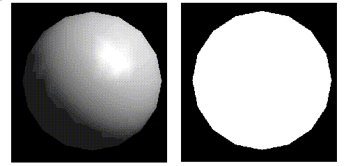
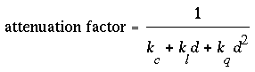
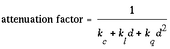
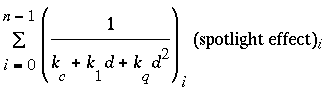

After reading this chapter, you'll be able to do the following:
Render illuminated objects by defining the desired light sources and
lighting model
Define the material properties of the objects being illuminated
Manipulate the matrix stack to control the position of light sources

Figure 6-1 : A Lit and an Unlit Sphere
As you can see, an unlit sphere looks no different from a two-dimensional disk. This demonstrates how critical the interaction between objects and light is in creating a three-dimensional scene.
With OpenGL, you can manipulate the lighting and objects in a scene to create many different kinds of effects. This chapter explains how to control the lighting in a scene. It discusses OpenGL's conceptual model of lighting, and it describes in detail how to set the numerous illumination parameters to achieve certain effects. Toward the end of the chapter, the mathematical computations that determine how lighting affects color are presented.
This chapter contains the following major sections:
"A Simple Example: Rendering a Lit Sphere" introduces OpenGL's lighting
facility by presenting a short program that renders a lit sphere.
"Creating Light Sources" explains how to define and position light sources.
"Selecting a Lighting Model" discusses the elements of a lighting model
and how to specify them.
"Defining Material Properties" explains how to describe the properties
of objects so that they interact with light in a desired way.
"The Mathematics of Lighting" presents the mathematical calculations
used by OpenGL to determine the effect of lights in a scene.
"Lighting in Color-Index Mode" discusses the differences between using RGBA mode and color-index mode for lighting.
OpenGL approximates light and lighting as if light can be broken into red, green, and blue components. Thus, the color of light sources is characterized by the amount of red, green, and blue light they emit, and the material of surfaces is characterized by the percentage of the incoming red, green, and blue components that are reflected in various directions. The OpenGL lighting equations are just an approximation, but one that works fairly well and can be computed relatively quickly. If you desire a more accurate (or just different) lighting model, you have to do your own calculations in software. Such software can be enormously complex, as a few hours of reading any optics textbook should convince you.
In the OpenGL lighting model, the light in a scene comes from several light sources that can individually be turned on and off. Some light comes from a particular direction or position, and some light is generally scattered about the scene. For example, when you turn on a light bulb in a room, most of the light comes from the bulb, but some light comes after bouncing off one, two, three, or more walls. This bounced light (called ambient) is assumed to be so scattered that there is no way to tell its original direction, but it disappears if a particular light source is turned off.
Finally, there might be a general ambient light in the scene that comes from no particular source, as if it had been scattered so many times that its original source is impossible to determine.
In the OpenGL model, the light sources have an effect only when there are surfaces that absorb and reflect light. Each surface is assumed to be composed of a material with various properties. A material might emit its own light (like headlights on an automobile), it might scatter some incoming light in all directions, and it might reflect some portion of the incoming light in a preferential direction like a mirror or shiny surface.
The OpenGL lighting model considers the lighting to be divided into four independent components: emitted, ambient, diffuse, and specular. All four components are computed independently, and then added together.
The ambient component is the light from that source that's been scattered so much by the environment that its direction is impossible to determine - it seems to come from all directions. Backlighting in a room has a large ambient component, since most of the light that reaches your eye has bounced off many surfaces first. A spotlight outdoors has a tiny ambient component; most of the light travels in the same direction, and since you're outdoors, very little of the light reaches your eye after bouncing off other objects. When ambient light strikes a surface, it's scattered equally in all directions.
Diffuse light comes from one direction, so it's brighter if it comes squarely down on a surface than if it barely glances off the surface. Once it hits a surface, however, it's scattered equally in all directions, so it appears equally bright, no matter where the eye is located. Any light coming from a particular position or direction probably has a diffuse component.
Finally, specular light comes from a particular direction, and it tends to bounce off the surface in a preferred direction. A well-collimated laser beam bouncing off a high-quality mirror produces almost 100 percent specular reflection. Shiny metal or plastic has a high specular component, and chalk or carpet has almost none. You can think of specularity as shininess.
Although a light source delivers a single distribution of frequencies, the ambient, diffuse, and specular components might be different. For example, if you have a white light in a room with red walls, the scattered light tends to be red, although the light directly striking objects is white. OpenGL allows you to set the red, green, and blue values for each component of light independently.
Like lights, materials have different ambient, diffuse, and specular colors, which determine the ambient, diffuse, and specular reflectances of the material. A material's ambient reflectance is combined with the ambient component of each incoming light source, the diffuse reflectance with the light's diffuse component, and similarly for the specular reflectance and component. Ambient and diffuse reflectances define the color of the material and are typically similar if not identical. Specular reflectance is usually white or gray, so that specular highlights end up being the color of the light source's specular intensity. If you think of a white light shining on a shiny red plastic sphere, most of the sphere appears red, but the shiny highlight is white.
For materials, the numbers correspond to the reflected proportions of those colors. So if R=1, G=0.5, and B=0 for a material, that material reflects all the incoming red light, half the incoming green, and none of the incoming blue light. In other words, if an OpenGL light has components (LR, LG, LB), and a material has corresponding components (MR, MG, MB), then, ignoring all other reflectivity effects, the light that arrives at the eye is given by (LR*MR, LG*MG, LB*MB).
Similarly, if you have two lights, which send (R1, G1, B1) and (R2, G2, B2) to the eye, OpenGL adds the components, giving (R1+R2, G1+G2, B1+B2). If any of the sums are greater than 1 (corresponding to a color brighter than the equipment can display), the component is clamped to 1.
Create, select, and position one or more light sources.
Create and select a lighting model, which defines the level of
global ambient light and the effective location of the viewpoint (for the
purposes of lighting calculations).
Define material properties for the objects in the scene.
Example 6-1 : Drawing a Lit Sphere:
#include <GL/gl.h>
#include <GL/glu.h>
#include "aux.h"
void myinit(void)
{
GLfloat mat_specular[] = { 1.0, 1.0, 1.0, 1.0 };
GLfloat mat_shininess[] = { 50.0 };
GLfloat light_position[] = { 1.0, 1.0, 1.0, 0.0 };
glMaterialfv(GL_FRONT, GL_SPECULAR, mat_specular);
glMaterialfv(GL_FRONT, GL_SHININESS, mat_shininess);
glLightfv(GL_LIGHT0, GL_POSITION, light_position);
glEnable(GL_LIGHTING);
glEnable(GL_LIGHT0);
glDepthFunc(GL_LEQUAL);
glEnable(GL_DEPTH_TEST);
}
void display(void)
{
glClear(GL_COLOR_BUFFER_BIT | GL_DEPTH_BUFFER_BIT);
auxSolidSphere(1.0);
glFlush();
}
void myReshape(GLsizei w, GLsizei h)
{
glViewport(0, 0, w, h);
glMatrixMode(GL_PROJECTION);
glLoadIdentity();
if (w <= h)
glOrtho (-1.5, 1.5, -1.5*(GLfloat)h/(GLfloat)w,
1.5*(GLfloat)h/(GLfloat)w, -10.0, 10.0);
else
glOrtho (-1.5*(GLfloat)w/(GLfloat)h,
1.5*(GLfloat)w/(GLfloat)h, -1.5, 1.5, -10.0, 10.0);
glMatrixMode(GL_MODELVIEW);
glLoadIdentity();
}
int main(int argc, char** argv)
{
auxInitDisplayMode (AUX_SINGLE | AUX_RGBA | AUX_DEPTH);
auxInitPosition (0, 0, 500, 500);
auxInitWindow (argv[0]);
myinit();
auxReshapeFunc (myReshape);
auxMainLoop(display);
}
The lighting-related calls are in the myinit() command; they're
discussed briefly in the following paragraphs and in more detail later
in the chapter. One thing to note about Example 6-1 is that it uses RGBA
color mode, not color-index mode. OpenGL's lighting calculation is different
for the two modes, and in fact the lighting capabilities are more limited
in color-index mode. Thus, RGBA is the preferred mode when doing lighting,
and all the examples in this chapter use it. See "Lighting in Color-Index
Mode" for more information about lighting in color-index mode.
After you've defined the characteristics of the lights you want, you have to turn them on with the glEnable() command. You also need to call this command with GL_LIGHTING as a parameter to prepare OpenGL to perform lighting calculations. See "Enabling Lighting" for more information about how to do this.
Creates the light specified by light, which can be GL_LIGHT0, GL_LIGHT1, ... , or GL_LIGHT7. The characteristic of the light being set is defined by pname, which specifies a named parameter (see Table 6-1 ). The param argument indicates the values to which the pname characteristic is set; it's a pointer to a group of values if the vector version is used, or the value itself if the nonvector version is used. The nonvector version can be used to set only single-valued light characteristics.
| Parameter Name | Default Value | Meaning |
|---|---|---|
| GL_AMBIENT | (0.0, 0.0, 0.0, 1.0) | ambient RGBA intensity of light |
| GL_DIFFUSE | (1.0, 1.0, 1.0, 1.0) | diffuse RGBA intensity of light |
| GL_SPECULAR | (1.0, 1.0, 1.0, 1.0) | specular RGBA intensity of light |
| GL_POSITION | (0.0, 0.0, 1.0, 0.0) | (x, y, z, w) position of light |
| GL_SPOT_DIRECTION | (0.0, 0.0, -1.0) | (x, y, z) direction of spotlight |
| GL_SPOT_EXPONENT | 0.0 | spotlight exponent |
| GL_SPOT_CUTOFF | 180.0 | spotlight cutoff angle |
| GL_CONSTANT_ATTENUATION | 1.0 | constant attenuation factor |
| GL_LINEAR_ATTENUATION | 0.0 | linear attenuation factor |
| GL_QUADRATIC_ATTENUATION | 0.0 | quadratic attenuation factor |
The default values listed for GL_DIFFUSE and GL_SPECULAR in Table 6-1 apply only to GL_LIGHT0. For other lights, the default value is (0.0, 0.0, 0.0, 1.0) for both GL_DIFFUSE and GL_SPECULAR.
Here's an example of using glLight*():
GLfloat light_ambient[] = { 0.0, 0.0, 0.0, 1.0 };
GLfloat light_diffuse[] = { 1.0, 1.0, 1.0, 1.0 };
GLfloat light_specular[] = { 1.0, 1.0, 1.0, 1.0 };
GLfloat light_position[] = { 1.0, 1.0, 1.0, 0.0 };
glLightfv(GL_LIGHT0, GL_AMBIENT, light_ambient);
glLightfv(GL_LIGHT0, GL_DIFFUSE, light_diffuse);
glLightfv(GL_LIGHT0, GL_SPECULAR, light_specular);
glLightfv(GL_LIGHT0, GL_POSITION, light_position);
As you can see, arrays are defined for the parameter values, and glLightfv()
is called repeatedly to set the various parameters. In this example, the
first three calls to glLightfv() are superfluous, since they're
being used to specify the default values for the GL_AMBIENT, GL_DIFFUSE,
and GL_SPECULAR parameters.
Remember to turn on each light with glEnable(); see "Enabling Lighting" for more information about how to do this.
All the parameters for glLight*() and their possible values are explained in the following sections. These parameters interact with those that define the overall lighting model for a particular scene and an object's material properties. See "Selecting a Lighting Model" and "Defining Material Properties" for more information about these two topics. "The Mathematics of Lighting" explains how all these parameters interact mathematically.
GLfloat light_ambient[] = { 0.0, 0.0, 1.0, 1.0};
glLightfv(GL_LIGHT0, GL_AMBIENT, light_ambient);
the result would have been as shown in the left part of Figure J-14 .
The GL_DIFFUSE parameter probably most closely correlates with what you naturally think of as "the color of a light." It defines the RGBA color of the diffuse light that a particular light source adds to a scene. By default, GL_DIFFUSE is (1.0, 1.0, 1.0, 1.0) for GL_LIGHT0, which produces a bright, white light as shown in Figure J-14 . The default value for any other light (GL_LIGHT1, ... , GL_LIGHT7) is (0.0, 0.0, 0.0, 0.0).
The GL_SPECULAR parameter affects the color of the specular highlight on an object. Typically, a real-world object such as a glass bottle has a specular highlight that's the color of the light shining on it (which is often white). Therefore, if you want to create a realistic effect, set the GL_SPECULAR parameter to the same value as the GL_DIFFUSE parameter. By default, GL_SPECULAR is (1.0, 1.0, 1.0, 1.0) for GL_LIGHT0 and (0.0, 0.0, 0.0, 0.0) for any other light.
The light used in Example 6-1 is a directional one:
GLfloat light_position[] = { 1.0, 1.0, 1.0, 0.0 };
glLightfv(GL_LIGHT0, GL_POSITION, light_position);
As shown, you supply a vector of four values (x, y, z, w) for the
GL_POSITION parameter. If the last value, w, is zero, the corresponding
light source is a directional one, and the (x, y, z) values describe
its direction. This direction is transformed by the modelview matrix just
as it would be if it described a normal vector. By default, GL_POSITION
is (0, 0, 1, 0), which defines a directional light that points along the
negative z-axis. (Note that nothing prevents you from creating a
directional light with the direction of (0, 0, 0), but such a light won't
help you much.)
If the w value is nonzero, the light is positional, and the (x, y, z) values specify the location of the light in homogeneous object coordinates (see Appendix G ). This location is transformed by the modelview matrix and stored in eye coordinates. See "Controlling a Light's Position and Direction" for more information about how to control the transformation of the light's location. Also, by default, a positional light radiates in all directions, but you can restrict it to producing a cone of illumination by defining the light as a spotlight. The next section, "Spotlights," explains how to define a light as a spotlight.
Remember that the colors across the face of a smooth-shaded polygon are determined by the colors calculated for the vertices. Because of this, you probably want to avoid using large polygons with local lights - if you locate the light near the middle of the polygon, the vertices might be too far away to receive much light, so the whole polygon will look darker than you intended. To avoid this problem, break up the large polygon into smaller ones.
For real-world lights, the intensity of light decreases as distance from the light increases. Since a directional light is infinitely far away, it doesn't make sense to attenuate its intensity over distance, so attenuation is disabled for a directional light. However, you might want to attenuate the light from a positional light. OpenGL attenuates a light source by multiplying the contribution of that source by an attenuation factor:

where
d = distance between the light's position and the vertex
kc = GL_CONSTANT_ATTENUATION
kl = GL_LINEAR_ATTENUATION
kq = GL_QUADRATIC_ATTENUATION
By default, kc is 1.0 and both kl and kq are zero, but you can give these parameters different values:
glLightf(GL_LIGHT0, GL_CONSTANT_ATTENUATION, 2.0); glLightf(GL_LIGHT0, GL_LINEAR_ATTENUATION, 1.0); glLightf(GL_LIGHT0, GL_QUADRATIC_ATTENUATION, 0.5);Note that the ambient, diffuse, and specular contributions are all attenuated. Only the emission and global ambient values aren't attenuated.
![[IMAGE]](figures/spot.gif)
Figure 6-2 : The GL_SPOT_CUTOFF Parameter
Note that no light is emitted beyond the edges of the cone. By default, the spotlight feature is disabled because the GL_SPOT_CUTOFF parameter is 180.0. This value means that light is emitted in all directions (the angle at the cone's apex is 360 degrees, so it isn't a cone at all). The value for GL_SPOT_CUTOFF is restricted to being within the range [0.0,90.0] (unless it has the special value 180.0). The following line sets the cutoff parameter to 45 degrees:
glLightf(GL_LIGHT0, GL_SPOT_CUTOFF, 45.0);You also need to specify a spotlight's direction, which determines the axis of the cone of light:
GLfloat spot_direction[] = { -1.0, -1.0, 0.0 };
glLightfv(GL_LIGHT0, GL_SPOT_DIRECTION, spot_direction);
The direction is specified in homogeneous object coordinates. By default,
the direction is (0.0, 0.0, -1.0), so if you don't explicitly set the value
of GL_SPOT_DIRECTION, the light points down the negative z-axis.
Also, keep in mind that a spotlight's direction is transformed by the modelview
matrix just as though it were a normal vector, and the result is stored
in eye coordinates. (See "Controlling a Light's Position and Direction"
for more information about such transformations.)
In addition to the spotlight's cutoff angle and direction, you can control the intensity distribution of the light within the cone, in two ways. First, you can set the attenuation factor described earlier, which is multiplied by the light's intensity. You can also set the GL_SPOT_EXPONENT parameter, which is by default zero, to control how concentrated the light is. The light's intensity is highest in the center of the cone. It's attenuated toward the edges of the cone by the cosine of the angle between the direction of the light and the direction from the light to the vertex being lighted, raised to the power of the spot exponent. Thus, higher spot exponents result in a more focused light source. See "The Mathematics of Lighting" for more details on the equations used to calculate light intensity.
GLfloat light1_ambient[] = { 0.2, 0.2, 0.2, 1.0 };
GLfloat light1_diffuse[] = { 1.0, 1.0, 1.0, 1.0 };
GLfloat light1_specular[] = { 1.0, 1.0, 1.0, 1.0 };
GLfloat light1_position[] = { -2.0, 2.0, 1.0, 1.0 };
GLfloat spot_direction[] = { -1.0, -1.0, 0.0 };
glLightfv(GL_LIGHT1, GL_AMBIENT, light1_ambient);
glLightfv(GL_LIGHT1, GL_DIFFUSE, light1_diffuse);
glLightfv(GL_LIGHT1, GL_SPECULAR, light1_specular);
glLightfv(GL_LIGHT1, GL_POSITION, light1_position);
glLightf(GL_LIGHT1, GL_CONSTANT_ATTENUATION, 1.5);
glLightf(GL_LIGHT1, GL_LINEAR_ATTENUATION, 0.5);
glLightf(GL_LIGHT1, GL_QUADRATIC_ATTENUATION, 0.2);
glLightf(GL_LIGHT1, GL_SPOT_CUTOFF, 45.0);
glLightfv(GL_LIGHT0, GL_SPOT_DIRECTION, spot_direction);
glLightf(GL_LIGHT1, GL_SPOT_EXPONENT, 2.0);
glEnable(GL_LIGHT1);
If these lines were added to Example 6-1 , the sphere would be lit with
two lights, one directional and one spotlight.
Modify Example 6-1 :
Add an additional colored spotlight. Hint: Use some of the code shown
in the preceding section.
Measure how these two changes affect performance.
A light that moves around a stationary object
A light that moves along with the viewpoint
glViewport(0, 0, w, h);
glMatrixMode (GL_PROJECTION);
glLoadIdentity();
if (w <= h)
glOrtho (-1.5, 1.5, -1.5*h/w, 1.5*h/w, -10.0, 10.0);
else
glOrtho (-1.5*w/h, 1.5*w/h, -1.5, 1.5, -10.0, 10.0);
glMatrixMode (GL_MODELVIEW);
glLoadIdentity();
/* later in myInit() */
GLfloat light_position[] = { 1.0, 1.0, 1.0, 1.0 };
glLightfv(GL_LIGHT0, GL_POSITION, position);
As you can see, the viewport and projection matrices are established first.
Then, the identity matrix is loaded as the modelview matrix, after which
the light position is set. Since the identity matrix is used, the originally
specified light position (1.0, 1.0, 1.0) isn't changed by being multiplied
by the modelview matrix. Then, since neither the light position nor the
modelview matrix is modified after this point, the light remains pointing
at (1.0, 1.0, 1.0).
Now suppose you want to rotate or translate the light position so that the light moves relative to a stationary object. One way to do this is to set the light position after the modeling transformation, which is itself changed specifically to modify the light position. You can begin with the same series of calls in an init() routine early in the program. Then, probably within an event loop, you need to perform the desired modeling transformation (on the modelview stack) and reset the light position. Here's what such code might look like:
void display(GLint spin)
{
GLfloat light_position[] = { 0.0, 0.0, 1.5, 1.0 };
glClear(GL_COLOR_BUFFER_BIT | GL_DEPTH_BUFFER_BIT);
glPushMatrix();
glTranslatef(0.0, 0.0, -5.0);
glPushMatrix();
glRotated((GLdouble) spin, 1.0, 0.0, 0.0);
glLightfv(GL_LIGHT0, GL_POSITION, light_position);
glPopMatrix();
auxSolidTorus();
glPopMatrix();
glFlush();
}
This display() command causes the scene to be redrawn with the light
rotated spin degrees around a stationary torus. Note the two pairs
of glPushMatrix() and glPopMatrix() calls, which are used
to isolate the viewing and modeling transformations, all of which occur
on the modelview stack. Since in this example the viewpoint remains constant,
the current matrix is pushed down the stack and then the desired viewing
transformation is loaded with glTranslatef(). The matrix stack is
pushed again before the modeling transformation glRotated() is specified.
Then the light position is set in the new, rotated coordinate system so
that the light itself appears to be rotated from its previous position.
(Remember that the light position is stored in eye coordinates, which are
obtained after transformation by the modelview matrix.) After the rotated
matrix is popped off the stack, the torus is drawn.
To create a light that moves along with the viewpoint, you need to set the light position before the viewing transformation. Then, the viewing transformation affects both the light and the viewpoint in the same way. For this example, let's use a slightly different set of calls in the myinit() routine:
GLfloat light_position() = { 0.0, 0.0, 1.0, 1.0 };
glViewport(0, 0, w-1, h-1);
glMatrixMode(GL_PROJECTION);
glLoadIdentity();
gluPerspective(40.0, (GLfloat) w/(GLfloat) h, 1.0, 100.0);
glMatrixMode(GL_MODELVIEW);
glLightfv(GL_LIGHT0, GL_POSITION, light_position);
Then, the display() routine that's called from the event loop to
redraw the scene might look like this:
void display(GLint spin)
{
glClear(GL_COLOR_BUFFER_MASK | GL_DEPTH_BUFFER_MASK);
glPushMatrix();
glTranslatef (0.0, 0.0, -5.0);
glRotatef ((GLfloat) spin, 1.0, 0.0, 0.0);
auxSolidTorus();
glPopMatrix();
glFlush();
}
When the lighted torus is redrawn, both the light position and the viewpoint
are moved spin degrees. Even though you haven't respecified the
light position, the light moves because the eye coordinate system has changed.
Modify Example 6-2 :
Change the attenuation so that the light decreases in intensity as it's moved away from the object. Hint: Add calls to glLight*() to set the desired attenuation parameters.
Example 6-2 : Moving a Light with Modeling Transformations: movelight.c
#include <GL/gl.h>
#include <GL/glu.h>
#include "aux.h"
static int spin = 0;
void movelight (AUX_EVENTREC *event)
{
spin = (spin + 30) % 360;
}
void myinit (void)
{
glEnable(GL_LIGHTING);
glEnable(GL_LIGHT0);
glDepthFunc(GL_LEQUAL);
glEnable(GL_DEPTH_TEST);
}
void display(void)
{
GLfloat position[] = { 0.0, 0.0, 1.5, 1.0 };
glClear (GL_COLOR_BUFFER_BIT | GL_DEPTH_BUFFER_BIT);
glPushMatrix ();
glTranslatef (0.0, 0.0, -5.0);
glPushMatrix ();
glRotated ((GLdouble) spin, 1.0, 0.0, 0.0);
glRotated (0.0, 1.0, 0.0, 0.0);
glLightfv (GL_LIGHT0, GL_POSITION, position);
glTranslated (0.0, 0.0, 1.5);
glDisable (GL_LIGHTING);
glColor3f (0.0, 1.0, 1.0);
auxWireCube (0.1);
glEnable (GL_LIGHTING);
glPopMatrix ();
auxSolidTorus (0.275, 0.85);
glPopMatrix ();
glFlush ();
}
void myReshape(GLsizei w, GLsizei h)
{
glViewport(0, 0, w, h);
glMatrixMode(GL_PROJECTION);
glLoadIdentity();
gluPerspective(40.0, (GLfloat) w/(GLfloat) h, 1.0, 20.0);
glMatrixMode(GL_MODELVIEW);
}
int main(int argc, char** argv)
{
auxInitDisplayMode (AUX_SINGLE | AUX_RGBA | AUX_DEPTH);
auxInitPosition (0, 0, 500, 500);
auxInitWindow (argv[0]);
myinit();
auxMouseFunc (AUX_LEFTBUTTON, AUX_MOUSEDOWN, movelight);
auxReshapeFunc (myReshape);
auxMainLoop(display);
}
Whether the viewpoint position is local to the scene or whether it should
be considered to be an infinite distance away
Whether lighting calculations should be performed differently for both the front and back faces of objects
GLfloat lmodel_ambient[] = { 0.2, 0.2, 0.2, 1.0 };
glLightModelfv(GL_LIGHT_MODEL_AMBIENT, lmodel_ambient);
In this example, the values used for lmodel_ambient are the default
values for GL_LIGHT_MODEL_AMBIENT. Since these numbers yield a small amount
of white ambient light, even if you don't add a specific light source to
your scene, you can still see the objects in the scene. Figure J-18 shows
the effect of different amounts of global ambient light.
With an infinite viewpoint, the direction between it and any vertex in the scene remains constant. A local viewpoint tends to yield more realistic results, but since the direction has to be calculated for each vertex, overall performance is decreased with a local viewpoint. By default, an infinite viewpoint is assumed. Here's how to change to a local viewpoint:
glLightModeli(GL_LIGHT_MODEL_LOCAL_VIEWER, GL_TRUE);This call places the viewpoint at (0, 0, 0) in eye coordinates. To switch back to an infinite viewpoint, pass in GL_FALSE as the argument.
glLightModeli(LIGHT_MODEL_TWO_SIDE, GL_TRUE);OpenGL reverses the surface normals for back-facing polygons; typically, this means that the surface normals of visible back- and front-facing polygons face the viewer, rather than pointing away. As a result, all polygons are illumnated correctly.
To turn two-sided lighting off, pass in GL_FALSE as the argument in the preceding call. See "Defining Material Properties" for information about how to supply material properties for both faces. You can also control which faces OpenGL considers to be front-facing with the command glFrontFace(). See "Reversing and Culling Polygon Faces" for more information about this command.
glEnable(GL_LIGHTING);To disable lighting, call glDisable() with GL_LIGHTING as the argument.
You also need to explicitly enable each light source that you define, after you've specified the parameters for that source. Example 6-1 uses only one light, GL_LIGHT0:
glEnable(GL_LIGHT0);
Specifies a current material property for use in lighting calculations. The face parameter can be GL_FRONT, GL_BACK, or GL_FRONT_AND_BACK to indicate which face of the object the material should be applied to. The particular material property being set is identified by pname and the desired values for that property are given by param, which is either a pointer to a group of values (if the vector version is used) or the actual value (if the nonvector version is used). The nonvector version works only for setting GL_SHININESS. The possible values for pname are shown in Table 6-2 . Note that GL_AMBIENT_AND_DIFFUSE allows you to set both the ambient and diffuse material colors simultaneously to the same RGBA value.
| Parameter Name | Default Value | Meaning |
|---|---|---|
| GL_AMBIENT | (0.2, 0.2, 0.2, 1.0) | ambient color of material |
| GL_DIFFUSE | (0.8, 0.8, 0.8, 1.0) | diffuse color of material |
| GL_AMBIENT_AND_DIFFUSE | ambient and diffuse color of material | |
| GL_SPECULAR | (0.0, 0.0, 0.0, 1.0) | specular color of material |
| GL_SHININESS | 0.0 | specular exponent |
| GL_EMISSION | (0.0, 0.0, 0.0, 1.0) | emissive color of material |
| GL_COLOR_INDEXES | (0,1,1) | ambient, diffuse, and specular color indices |
As discussed in "Selecting a Lighting Model," you can choose to have lighting calculations performed differently for the front- and back-facing polygons of objects. If the back faces might indeed be seen, you can supply different material properties for the front and the back surfaces by using the face parameter of glMaterial*(). See Figure J-19 for an example of an object drawn with different inside and outside material properties.
To give you an idea of the possible effects you can achieve by manipulating material properties, see Figure J-21 . This figure shows the same object drawn with several different sets of material properties. The same light source and lighting model are used for the entire figure. The sections that follow discuss the specific properties used to draw each of these spheres.
Note that most of the material properties set with glMaterial*() are (R, G, B, A) colors. Regardless of what alpha values are supplied for other parameters, the alpha value at any particular vertex is the diffuse-material alpha value (that is, the alpha value given to GL_DIFFUSE with the glMaterial*() command, as described in the next section. (See "Blending" for a complete discussion of alpha values.) Also, none of the RGBA material properties apply in color-index mode; see "Lighting in Color-Index Mode" for more information about what parameters are relevant in color-index mode.
Ambient reflectance affects the overall color of the object. Because diffuse reflectance is brightest where an object is directly illuminated, ambient reflectance is most noticeable where an object receives no direct illumination. An object's total ambient reflectance is affected by the global ambient light and ambient light from individual light sources. Like diffuse reflectance, ambient reflectance isn't affected by the position of the viewpoint.
For real-world objects, diffuse and ambient reflectance are normally the same color. For this reason, OpenGL provides you with a convenient way of assigning the same value to both simultaneously with glMaterial*():
GLfloat mat_amb_diff[] = { 0.1, 0.5, 0.8, 1.0 };
glMaterialfv(GL_FRONT_AND_BACK, GL_AMBIENT_AND_DIFFUSE,
mat_amb_diff);
In this example, the RGBA color (0.1, 0.5, 0.8, 1.0) - a deep blue color
- represents the current ambient and diffuse reflectance for both the front-
and back-facing polygons.
In Figure J-21 , the first row of spheres has no ambient reflectance (0.0, 0.0, 0.0, 0.0), and the second row has a significant amount of it (0.7, 0.7, 0.7, 1.0).
OpenGL allows you to set the RGBA color of a specular highlight (with GL_SPECULAR) and to control the size and brightness of the highlight (with GL_SHININESS). You can assign a number in the range of [0.0, 128.0] to GL_SHININESS - the higher the value, the smaller and brighter (more focused) the highlight. See "The Mathematics of Lighting" for the details of how specular highlights are calculated.
In Figure J-21 , the spheres in the first column have no specular reflection. In the second column, GL_SPECULAR and GL_SHININESS are assigned values as follows:
GLfloat mat_specular[] = { 1.0, 1.0, 1.0, 1.0 };
GLfloat low_shininess[] = { 5.0 };
glMaterialfv(GL_FRONT, GL_SPECULAR, mat_specular);
glMaterialfv(GL_FRONT, GL_SHININESS, low_shininess);
In the third column, the GL_SHININESS parameter is increased to 100.0.
GLfloat mat_emission[] = {0.3, 0.2, 0.2, 0.0};
glMaterialfv(GL_FRONT, GL_EMISSION, mat_emission);
Notice that the spheres appear to be slightly glowing; however, they're
not actually acting as light sources. You would need to create a light
source and position it at the same location as the sphere to create that
effect.
Example 6-3 : Using Different Material Properties: material.c
GLfloat no_mat[] = { 0.0, 0.0, 0.0, 1.0 };
GLfloat mat_ambient[] = { 0.7, 0.7, 0.7, 1.0 };
GLfloat mat_ambient_color[] = { 0.8, 0.8, 0.2, 1.0 };
GLfloat mat_diffuse[] = { 0.1, 0.5, 0.8, 1.0 };
GLfloat mat_specular[] = { 1.0, 1.0, 1.0, 1.0 };
GLfloat no_shininess[] = { 0.0 };
GLfloat low_shininess[] = { 5.0 };
GLfloat high_shininess[] = { 100.0 };
GLfloat mat_emission[] = {0.3, 0.2, 0.2, 0.0};
glClear(GL_COLOR_BUFFER_BIT | GL_DEPTH_BUFFER_BIT);
/* draw sphere in first row, first column
* diffuse reflection only; no ambient or specular
*/
glPushMatrix();
glTranslatef (-3.75, 3.0, 0.0);
glMaterialfv(GL_FRONT, GL_AMBIENT, no_mat);
glMaterialfv(GL_FRONT, GL_DIFFUSE, mat_diffuse);
glMaterialfv(GL_FRONT, GL_SPECULAR, no_mat);
glMaterialfv(GL_FRONT, GL_SHININESS, no_shininess);
glMaterialfv(GL_FRONT, GL_EMISSION, no_mat);
auxSolidSphere();
glPopMatrix();
/* draw sphere in first row, second column
* diffuse and specular reflection; low shininess; no ambient
*/
glPushMatrix();
glTranslatef (-1.25, 3.0, 0.0);
glMaterialfv(GL_FRONT, GL_AMBIENT, no_mat);
glMaterialfv(GL_FRONT, GL_DIFFUSE, mat_diffuse);
glMaterialfv(GL_FRONT, GL_SPECULAR, mat_specular);
glMaterialfv(GL_FRONT, GL_SHININESS, low_shininess);
glMaterialfv(GL_FRONT, GL_EMISSION, no_mat);
auxSolidSphere();
glPopMatrix();
/* draw sphere in first row, third column
* diffuse and specular reflection; high shininess; no ambient
*/
glPushMatrix();
glTranslatef (1.25, 3.0, 0.0);
glMaterialfv(GL_FRONT, GL_AMBIENT, no_mat);
glMaterialfv(GL_FRONT, GL_DIFFUSE, mat_diffuse);
glMaterialfv(GL_FRONT, GL_SPECULAR, mat_specular);
glMaterialfv(GL_FRONT, GL_SHININESS, high_shininess);
glMaterialfv(GL_FRONT, GL_EMISSION, no_mat);
auxSolidSphere();
glPopMatrix();
/* draw sphere in first row, fourth column
* diffuse refl.; emission; no ambient or specular reflection
*/
glPushMatrix();
glTranslatef (3.75, 3.0, 0.0);
glMaterialfv(GL_FRONT, GL_AMBIENT, no_mat);
glMaterialfv(GL_FRONT, GL_DIFFUSE, mat_diffuse);
glMaterialfv(GL_FRONT, GL_SPECULAR, no_mat);
glMaterialfv(GL_FRONT, GL_SHININESS, no_shininess);
glMaterialfv(GL_FRONT, GL_EMISSION, mat_emission);
auxSolidSphere();
glPopMatrix();
As you can see, glMaterialfv() is called repeatedly to set the desired
material property for each sphere. Note that it's called only to change
a property that needs to be changed. The second and third spheres use the
same ambient and diffuse properties as the first sphere, for example, so
these properties aren't reset. Since glMaterial*() has a performance
cost associated with its use, it's best to minimize material-property changes.
Another technique for minimizing performance costs associated with changing material properties is to use glColorMaterial().void glColorMaterial(GLenum face, GLenum mode);
Causes the material property (or properties) specified by mode of the specified material face (or faces) specified by face to track the value of the current color at all times. A change to the current color (using glColor*()) immediately updates the specified material properties. The face parameter can be GL_FRONT, GL_BACK, or GL_FRONT_AND_BACK (the default). The mode parameter can be GL_AMBIENT, GL_DIFFUSE, GL_AMBIENT_AND_DIFFUSE (the default), GL_SPECULAR, or GL_EMISSION.
Note that glColorMaterial() specifies two independent values: the first specifies which face or faces are updated, and the second specifies which material property or properties of those faces are updated. OpenGL does not maintain separate mode variables for each face.
After calling glColorMaterial(), you need to call glEnable() with GL_COLOR_MATERIAL as the parameter. Then, you can change the current color using glColor*() (or other material properties, using glMaterial*()) as needed as you draw:
glColorMaterial(GL_FRONT, GL_DIFFUSE); glEnable(GL_COLOR_MATERIAL); glColor3f(0.2, 0.5, 0.8); /* draw some objects here */ glColor3f(0.9, 0.0, 0.2); /* draw other objects here */ glDisable(GL_COLOR_MATERIAL);You should use glColorMaterial() whenever you need to change a single material parameter for most vertices in your scene. If you need to change more than one material parameter, as was the case for Figure J-21 , use glMaterial*(). When you don't need the capabilities of glColorMaterial() anymore, be sure to disable it, so that you don't get undesired material properties and so that you don't incur the performance cost associated with it. The performance value in using glColorMaterial() varies, depending on your OpenGL implementation. Some implementations may be able to optimize the vertex routines so that they can quickly update material properties based on the current color.
Example 6-4 shows an interactive program that uses glColorMaterial() to change material parameters. Pressing each of the three mouse buttons changes the color of the diffuse reflection.
Example 6-4 : Using glColorMaterial(): colormat.c
#include <GL/gl.h>
#include <GL/glu.h>
#include "aux.h"
GLfloat diffuseMaterial[4] = { 0.5, 0.5, 0.5, 1.0 };
void myinit(void)
{
GLfloat mat_specular[] = { 1.0, 1.0, 1.0, 1.0 };
GLfloat light_position[] = { 1.0, 1.0, 1.0, 0.0 };
glMaterialfv(GL_FRONT, GL_DIFFUSE, diffuseMaterial);
glMaterialfv(GL_FRONT, GL_SPECULAR, mat_specular);
glMaterialf(GL_FRONT, GL_SHININESS, 25.0);
glLightfv(GL_LIGHT0, GL_POSITION, light_position);
glEnable(GL_LIGHTING);
glEnable(GL_LIGHT0);
glDepthFunc(GL_LEQUAL);
glEnable(GL_DEPTH_TEST);
glColorMaterial(GL_FRONT, GL_DIFFUSE);
glEnable(GL_COLOR_MATERIAL);
}
void changeRedDiffuse (AUX_EVENTREC *event)
{
diffuseMaterial[0] += 0.1;
if (diffuseMaterial[0] > 1.0)
diffuseMaterial[0] = 0.0;
glColor4fv(diffuseMaterial);
}
void changeGreenDiffuse (AUX_EVENTREC *event)
{
diffuseMaterial[1] += 0.1;
if (diffuseMaterial[1] > 1.0)
diffuseMaterial[1] = 0.0;
glColor4fv(diffuseMaterial);
}
void changeBlueDiffuse (AUX_EVENTREC *event)
{
diffuseMaterial[2] += 0.1;
if (diffuseMaterial[2] > 1.0)
diffuseMaterial[2] = 0.0;
glColor4fv(diffuseMaterial);
}
void display(void)
{
glClear(GL_COLOR_BUFFER_BIT | GL_DEPTH_BUFFER_BIT);
auxSolidSphere(1.0);
glFlush();
}
void myReshape(GLsizei w, GLsizei h)
{
glViewport(0, 0, w, h);
glMatrixMode(GL_PROJECTION);
glLoadIdentity();
if (w <= h)
glOrtho (-1.5, 1.5, -1.5*(GLfloat)h/(GLfloat)w,
1.5*(GLfloat)h/(GLfloat)w, -10.0, 10.0);
else
glOrtho (-1.5*(GLfloat)w/(GLfloat)h,
1.5*(GLfloat)w/(GLfloat)h, -1.5, 1.5, -10.0, 10.0);
glMatrixMode(GL_MODELVIEW);
glLoadIdentity();
}
int main(int argc, char** argv)
{
auxInitDisplayMode (AUX_SINGLE | AUX_RGBA | AUX_DEPTH);
auxInitPosition (0, 0, 500, 500);
auxInitWindow (argv[0]);
myinit();
auxMouseFunc(AUX_LEFTBUTTON, AUX_MOUSEDOWN,
changeRedDiffuse);
auxMouseFunc(AUX_MIDDLEBUTTON, AUX_MOUSEDOWN,
changeGreenDiffuse);
auxMouseFunc(AUX_RIGHTBUTTON, AUX_MOUSEDOWN,
changeBlueDiffuse);
auxReshapeFunc(myReshape);
auxMainLoop(display);
}
Modify Example 6-3 :
Change the diffuse, ambient, and specular reflection parameters, the
shininess exponent, and the emission color. Hint: Use the glMaterial*()
command, but avoid making excessive calls.
Use two-sided materials and add an arbitrary clipping plane (see "Additional
Clipping Planes" ) so you can see the inside and outside of a row or column
of spheres. Hint: Turn on two-sided lighting with GL_LIGHT_MODEL_TWO_SIDE,
set the desired material properties, and add a clipping plane.
Remove all the glMaterialfv() calls, and use the more efficient glColorMaterial() calls to achieve the same lighting.
This section presents the equations used by OpenGL to perform lighting calculations to determine colors when in RGBA mode. (You can find the corresponding calculations for color-index mode in "The Mathematics of Color-Index Mode Lighting." ) You don't need to read this section if you're willing to experiment to obtain the lighting conditions you want. Even after reading this section, you'll probably have to experiment, but you'll have a better idea of how the values of parameters affect a vertex's color. Remember that if lighting is not enabled, the color of a vertex is simply the current color; if it is enabled, the lighting computations described here are carried out in eye coordinates.
In the following equations, mathematical operations are performed separately on the R, G, and B components. Thus, for example, when three terms are shown as added together, the R values, the G values, and the B values for each term are separately added to form the final RGB color (R1+R2+R3, G1+G2+G3, B1+B2+B3). When three terms are multiplied, the calculation is (R1R2R3, G1G2G3, B1B2B3). (Remember that the final A or alpha component at a vertex is equal to the material's diffuse alpha value at that vertex.)
The color produced by lighting a vertex is computed as follows:
vertex color = the material emission at that vertex + the global ambient light scaled by the material's ambient property at that vertex + the ambient, diffuse, and specular contributions from all the light sources, properly attenuated
After lighting calculations are performed, the color values are clamped (in RGBA mode) to the range [0,1].
Note that OpenGL's lighting calculations don't take into account the possibility of one object blocking light from another, so shadows aren't automatically created. (See "Shadows" for a technique to create shadows.) Also keep in mind that with OpenGL, illuminated objects don't radiate light onto other objects.
ambientlight model * ambientmaterial
Each of the R, G, and B values for these two parameters are multiplied separately to compute the final RGB value for this term: (R1R2, G1G2, B1B2).
contribution = attenuation factor * spotlight effect *
(ambient term + diffuse term + specular term)
attenuation factor =

where
d = distance between the light's position and the vertex
kc = GL_CONSTANT_ATTENUATION
kl = GL_LINEAR_ATTENUATION
kq = GL_QUADRATIC_ATTENUATION
If the light is a directional one, the attenuation factor is 1.
0 if the light is a spotlight but the vertex lies outside the cone of
illumination produced by the spotlight.
(max {v x d, 0 } )GL_SPOT_EXPONENT where:
v = (vx, vy, vz) is the unit vector that points from the spotlight (GL_POSITION) to the vertex.
d = (dx, dy, dz) is the spotlight's direction (GL_SPOT_DIRECTION), assuming the light is a spotlight and the vertex lies inside the cone of illumination produced by the spotlight.
The dot product of the two vectors v and d varies as the cosine of the angle between them; hence, objects directly in line get maximum illumination, and objects off the axis have their illumination drop as the cosine of the angle.
ambientlight *ambientmaterial
(max { l · n , 0 } ) * diffuselight * diffusematerial where:
l = (lx, ly, lz) is the unit vector that points from the vertex to the light position (GL_POSITION).
n = (nx, ny, nz) is the unit normal vector at the vertex.
The sum of the two unit vectors that point between (1) the vertex and
the light position and (2) the vertex and the viewpoint (assuming that
GL_LIGHT_MODEL_LOCAL_VIEWER is true; if it's not true, the vector (0, 0,
1) is used as the second vector in the sum). This vector sum is normalized
(by dividing each component by the magnitude of the vector) to yield s
= (sx, sy, sz).
The specular exponent (GL_SHININESS).
The specular color of the light (GL_SPECULARlight).
The specular property of the material (GL_SPECULARmaterial).
(max { s x n , 0} )shininess * specularlight * specularmaterial
However, if 1 x n = 0, the specular term is 0.
vertex color = emissionmaterial +
ambientlight model * ambientmaterial +

[ ambientlight *ambientmaterial +
(max { 1 x n , 0 } ) * diffuselight * diffusematerial +
(max {s x n ,0} )shininess * specularlight * specularmaterial ] i
dci = 0.30 R(dl) + 0.59 G(dl) + 0.11 B(dl)
sci = 0.3 R(sl) + 0.59 G(sl) + 0.11 B(sl)
where R(x), G(x), and B(x) refer to the red, green, and blue components, respectively, of color x. The weighting values 0.30, 0.59, and 0.11 reflect the "perceptual" weights that red, green, and blue have for your eye - your eye is most sensitive to green and least sensitive to blue.
To specify material colors in color-index mode, use glMaterial*() with the special parameter GL_COLOR_INDEXES, as follows:
GLfloat mat_colormap[] = { 16.0, 47.0, 79.0 };
glMaterialfv(GL_FRONT, GL_COLOR_INDEXES, mat_colormap);
The three numbers supplied for GL_COLOR_INDEXES specify the color indices
for the ambient, diffuse, and specular material colors, respectively. In
other words, OpenGL regards the color associated with the first index (16.0
in this example) as the pure ambient color, with the second index (47.0)
as the pure diffuse color, and with the third index (79.0) as the pure
specular color. (By default, the ambient color index is 0.0, and the diffuse
and specular color indices are both 1.0. Note that glColorMaterial()
has no effect on color-index lighting.)
As it draws a scene, OpenGL uses colors associated with indices in between these numbers to shade objects in the scene. Therefore, you must build a color ramp between the indicated indices (in this example, between indices 16 and 47, and then between 47 and and 79). Often, the color ramp is built smoothly, but you might want to use other formulations to achieve different effects. Here's an example of a smooth color ramp that starts with a black ambient color and goes through a magenta diffuse color to a white specular color:
for (i = 0; i < 32; i++) {
auxSetOneColor (16 + i, 1.0 * (i/32.0), 0.0, 1.0 * (i/32.0));
auxSetOneColor (48 + i, 1.0, 1.0 * (i/32.0), 1.0);
}
The auxiliary library command auxSetOneColor() takes four arguments.
It associates the color index indicated by the first argument to the RGB
triplet specified by the last three arguments. When i = 0, the color
index 16 is assigned the RGB value (0.0, 0.0, 0.0), or black. The color
ramp builds smoothly up to the diffuse material color at index 47 (when
i
= 31), which is assigned the pure magenta RGB value (1.0, 0.0, 1.0). The
second loop builds the ramp between the magenta diffuse color and the white
(1.0, 1.0, 1.0) specular color (index 79). Figure J-20 shows the result
of using this color ramp with a single lighted sphere.
As you might expect, since the allowable parameters are different for color-index mode than for RGBA mode, the calculations are different as well. Since there's no material emission and no ambient light, the only terms of interest from the RGBA equations are the diffuse and specular contributions from the light sources and the shininess. Even these need to be modified, however, as explained below.
Begin with the diffuse and specular terms from the RGBA equations. In the diffuse term, instead of diffuselight * diffusematerial , substitute dci as defined in the previous section for color-index mode. Similarly, in the specular term, instead of specularlight * specularmaterial , use sci as defined in the previous section. (Calculate the attenuation, spotlight effect, and all other components of these terms as before.) Call these modified diffuse and specular terms d and s, respectively. Now let s' = min{ s, 1 }, and then compute
c = am + d(1-s')(dm-am) + s'(sm-am)
where am, dm, and sm are the ambient, diffuse, and specular material indexes specified using GL_COLOR_INDEXES. The final color index is
c' = min { c, sm }
After lighting calculations are performed, the color-index values are converted to fixed-point (with an unspecified number of bits to the right of the binary point). Then the integer portion is masked (bitwise ANDed) with 2n-1, where n is the number of bits in a color in the color-index buffer.